界面全览
11 个功能模块全收录：首页、草稿、相册、视频模板、卡点主题、剪辑编辑器、AiCut、设置、弹窗、深色模式与商店物料。文字与截图上下分层，横向滑轨浏览，点击可放大。
首页 Home
Home & Onboarding首页信息架构从「工具型」走向「内容型」：顶部保留品牌与草稿入口，中部以 Try 一键成片 + 内容卡片流承载创作动机，底部悬浮创建按钮。2026.09 新版统一了 Banner 组件、分页器与推荐流卡片。
- 新版首页 2026.09 — 最新归档版本
- Try / 一键成片 — 模板推荐流承接创作动机
- 页面整理（最新归档）— 旧版对照
- 首页状态与迭代 — 多版本横向对照
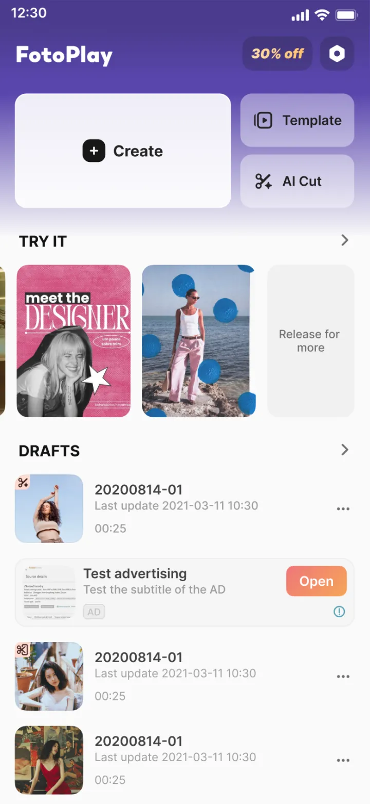
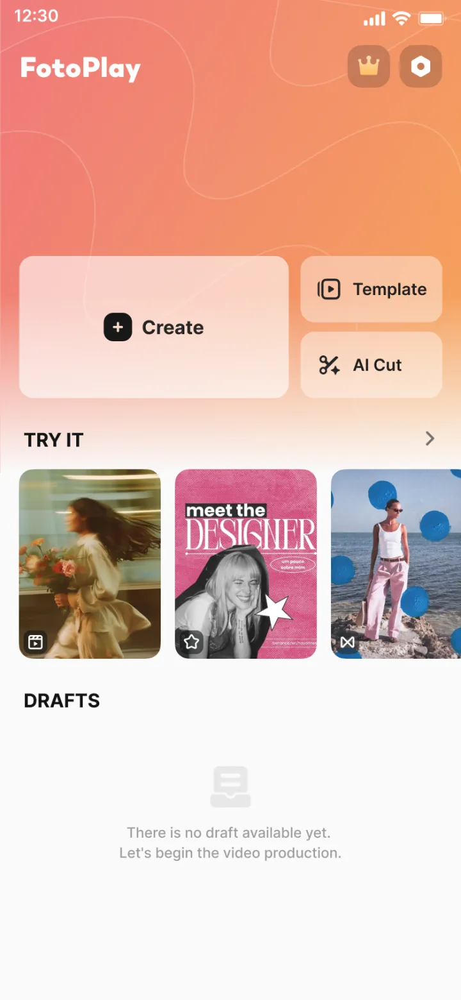
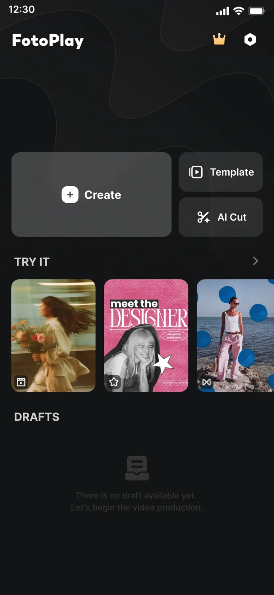
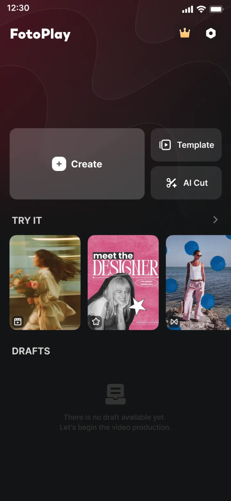
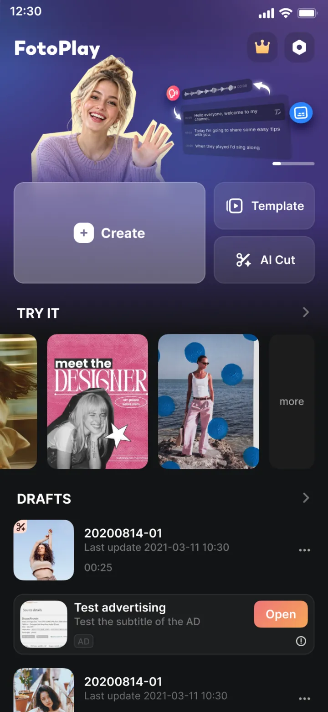
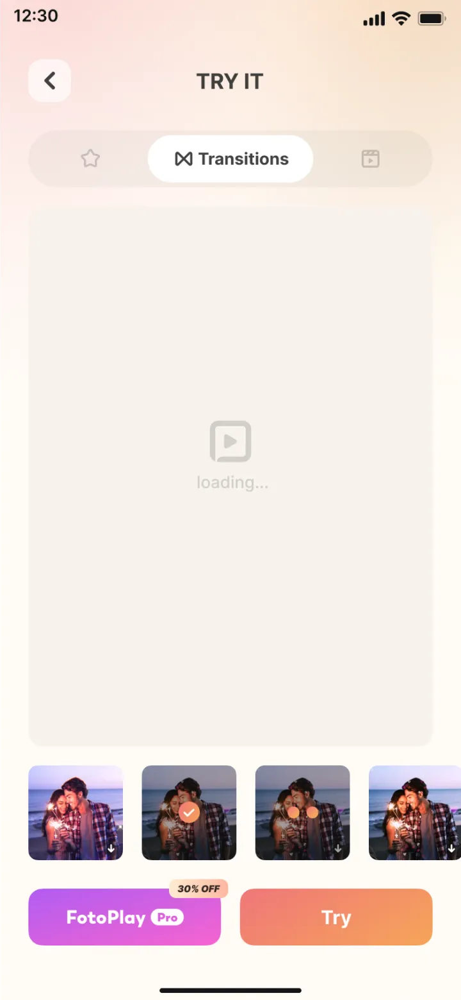
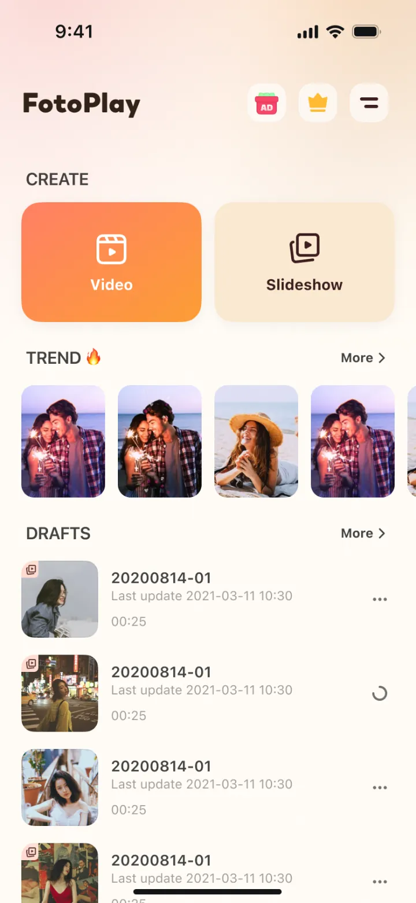
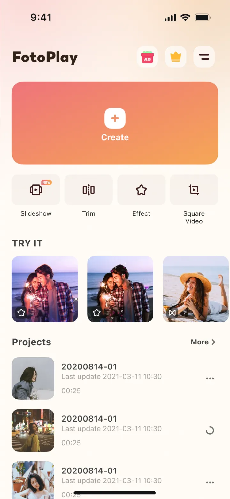
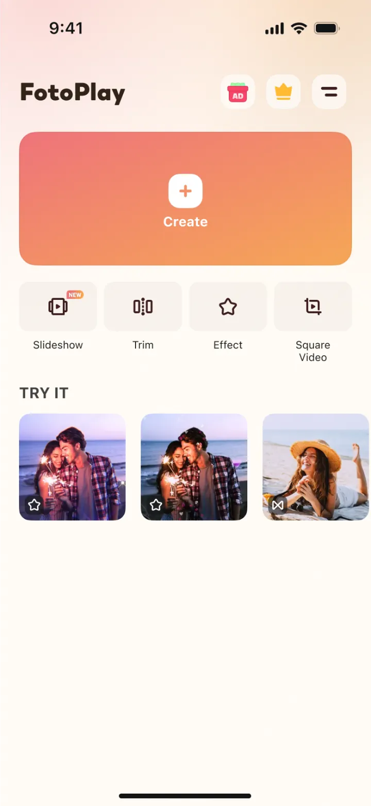

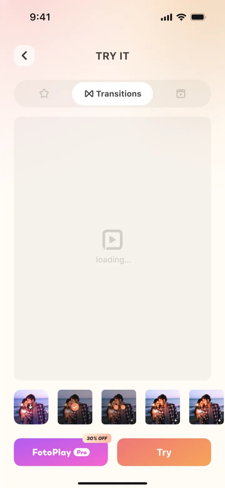
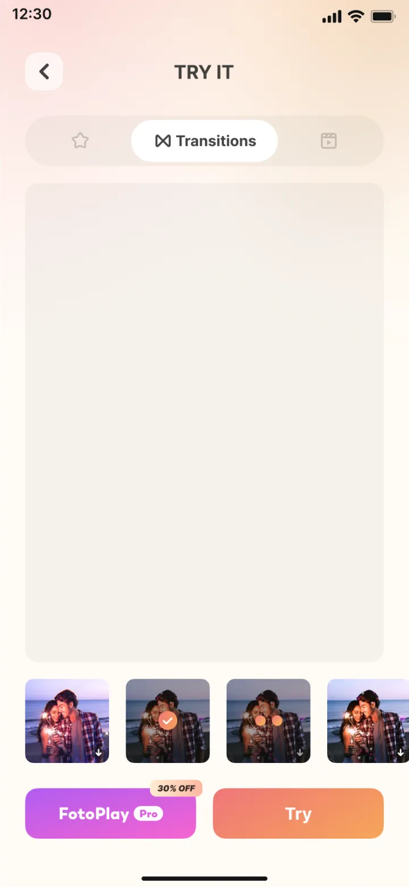
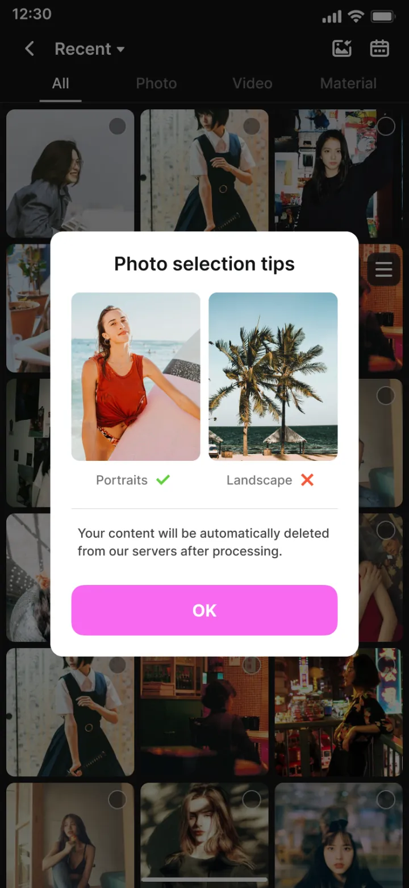
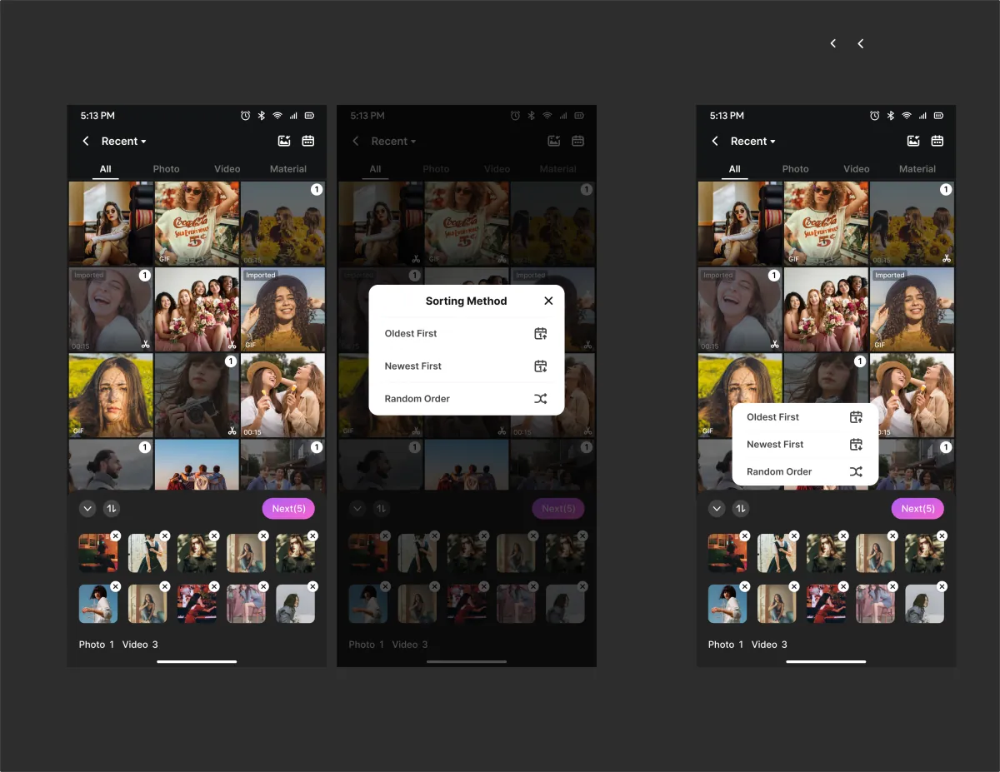
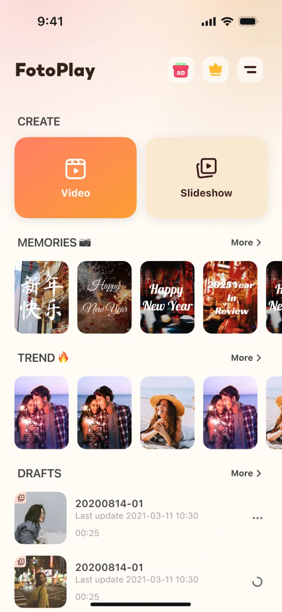
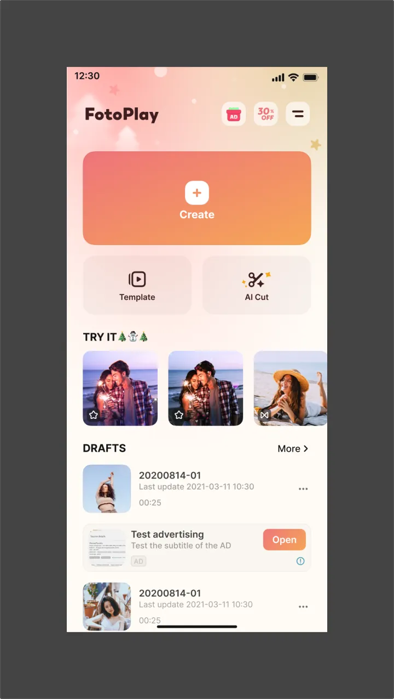
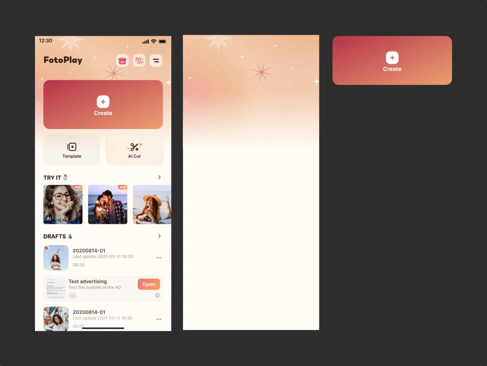
草稿
Drafts草稿中心承载「续剪」这一高频动作：列表支持全选、批量操作与重命名，配合版权草稿的特殊状态处理，让用户随时回到上一次的剪辑现场。
- 草稿列表与全选
- 选择与批量操作
- 重命名与状态
- 多版本迭代
相册
Gallery & Media相册是素材入口的核心：多选与拼图布局降低创作门槛，相册回忆自动聚合素材，排序优化覆盖长按滑动等细交互，GIPHY 补充在线素材库。
- 素材选择与拼图 Layout
- 相册回忆 — 自动聚合素材
- 素材排序优化 — 长按左右滑动
- GIPHY 在线素材
视频模板
Video Templates视频模板提供「套模板即出片」的轻创作路径：推荐流承接流量，模板编辑保持品牌一致性，水印与订阅钩子构成商业化闭环。
- 模板推荐流
- 模板编辑
- 订阅解锁与水印
卡点主题
Beat & Music Templates卡点主题把音乐节拍转成可视化创作：节拍点自动标记、编辑器支持逐帧对齐，音乐库内置多套主题，一键生成节奏感成片。
- 卡点节拍 — 节拍点自动标记
- 卡点编辑 — 逐帧对齐
- 卡点音乐 — 主题音乐库
剪辑编辑器
Video Editor主轨道时间轴 + 14 个子域：素材、音乐、文字、贴纸、特效滤镜、转场、字幕、文字转语音、画中画/抠图/拉片/图层、关键帧曲线、变速、幻灯片/年终回顾、导出保存，覆盖完整剪辑链路。
- 主界面与时间轴 · 素材与基础编辑 · 音乐与音频 · 文字
- 贴纸 & 动图素材 · 特效与滤镜 · 转场与动画 · 字幕 Subtitle
- 文字转语音 TTS · 画中画 / 抠图 / 拉片 / 图层
- 关键帧曲线 · 变速 · 幻灯片 / 年终回顾 · 导出与保存

AiCut AI 能力
AI Creation · AiCutAiCut 整合了图片方向的 AI 能力入口：智能抠图、AI 特效与一键增强聚合在同一入口，让 AI 成为剪辑链路里的自然一步。
- AiCut 图片功能整合
- AI 能力统一入口
设置
Settings & Account设置页覆盖账号、隐私、订阅、深色模式切换、教程、成就等通用功能。
- 设置 · 账号 · 隐私 · 深色模式
- 订阅 · 运营活动订阅页 · 限时优惠
- 教程与帮助中心 · 新手指引
- 成就系统 & 专属内容 · 用户成长
弹窗体系
Dialogs & Modals弹窗是状态与规则的集中表达：权限请求、崩溃反馈、订阅付费、版权提示与活动运营各有专属模态，统一视觉语言下区分语义层级。
- 权限与系统弹窗
- 崩溃与反馈弹窗
- 订阅与付费弹窗
- 版权与草稿操作弹窗
- 活动与提示弹窗

深色模式
Dark Mode深色是 FotoPlay 的默认语言：核心链路（首页、草稿、剪辑、设置与弹窗）均有完整深色适配，保证弱光环境与 OLED 屏幕下的一致体验。
- 首页与草稿 · 深色
- 剪辑 · 深色
- 设置与弹窗 · 深色
商店发布图与运营物料
Store & LocalizationGoogle Play / App Store 发布图与 EN · DE · ES · PT 多语言运营物料，覆盖商店 listing、活动 Banner 与本地化文案场景。
- Google Play 发布图
- App Store 发布图
- 多语言物料 · EN
- 多语言物料 · DE · ES · PT